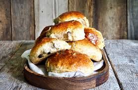

Boller fra bakeriet i Lom

Norwegian sweet buns
Traditional Norwegian sweet buns from the famous bakery in Lom. Characterized by the use of cardamom and rasins.
This recipe makes 20 rather large buns.
Ingredients
- Butter
- Whole milk
- Egg
- Fresh yeast
- Sugar
- All purpose flour
- Cardamom
- Salt
- Rasins
Steps
- Have all the ingredients except butter in a mixing bowl. Knead for 15 minutes. Add the butter. Knead for another 15 minutes.
- Let the dough rest for 40 minutes on the counter
- Gently knead your dough. Divide the dough into equal pieces. Roll them into smooth, round, buns. And put on a baking sheet
- Let the buns rise to twice their original size.
- Brush the buns with a beaten egg, and bake them in the oven at 225 degrees celsius for 10-12 minutes.